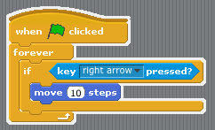

| Core4 Concept | Technical Definition | Real-Life Analogy | Python Example | Scratch Example |
|---|---|---|---|---|
| Variables | A value that can change, depending on conditions or on information passed to the program. It is represented by a phrase, word , numbers, etc. (ex: t=12) | Just like how t can represent the value 12, kfc represents the word "Kentucky Fried Chicken". | python_variable = 12 | Set variable to 12 |
| Loops | A sequence of instruction s that is continually repeated until a certain condition is reached. | A person who does not stop washing the dishes until the number of dishes inside the sink is 0. | dishes = 10 washed_dishes = 0 while dishes !=0: washed_dishes += 1 dishes-= 1 |
 |
| Conditionals | ||||
| Functions |